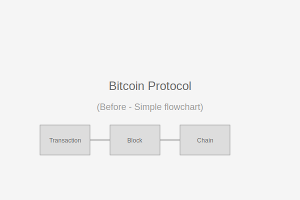
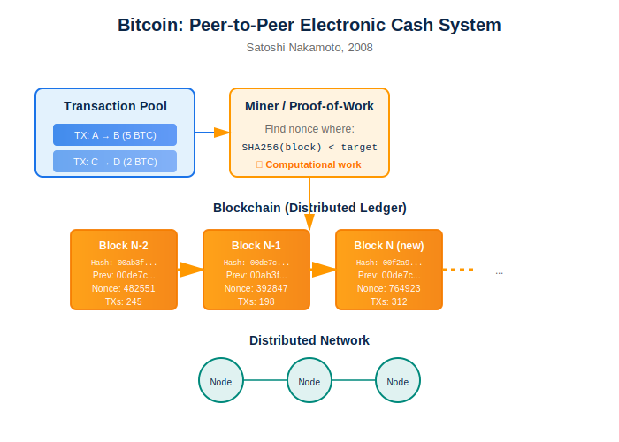

Bitcoin — Sistema peer-to-peer
Antes
Depois
Fluxogramas e diagramas do whitepaper do Bitcoin (Nakamoto, 2008). Visualização clara de blockchain, proof-of-work e transações.
Ver guia de diagramas técnicos
Guia para diagramas técnicos — Sistemas e Protocolos
Diretrizes para criar diagramas de sistemas distribuídos, protocolos e fluxogramas.
- Fluxogramas com símbolos padronizados (processos, decisões, dados) e legendas claras
- Sequências temporais representadas da esquerda para direita ou de cima para baixo
- Componentes de sistema identificados com nomes consistentes e cores distintas
- Setas direcionais claras indicando fluxo de informação e dependências
- Abstrações apropriadas ao nível técnico da audiência (detalhes vs. visão geral)
- Notações matemáticas e criptográficas renderizadas profissionalmente
- Casos de uso e edge cases ilustrados quando relevantes
Observação: Para whitepapers técnicos, priorize clareza conceitual sobre detalhes de implementação.